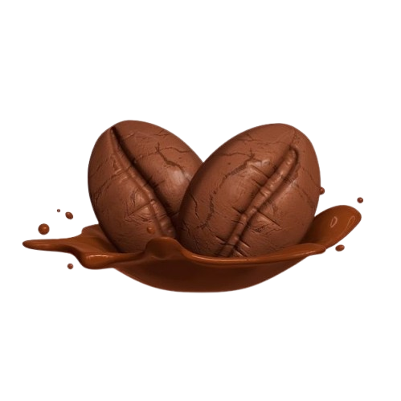
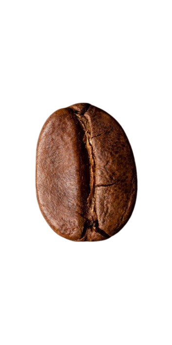
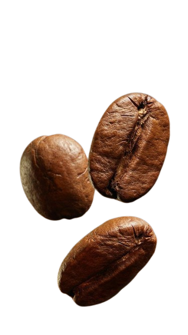

Sip, smile, and seize the day.


Explore our finest coffee blends, expertly
roasted and brewed to perfection, offering a rich,
a romatic experience that awakens your senses. Make
every moment unforgettable.
The history of coffee dates back centuries, first from its
origin in Ethiopia and Yemen. It was already known in
Mecca in the 15th century. Also, in the 15th century, Sufi
Muslim monasteries (khanqahs) in Yemen employed
coffee as an aid to concentration during prayers. Coffee
later spread to the Levant in the early 16th century; it
caused some controversy on whether it was halal in
Ottoman and Mamluk society. Coffee arrived in Italy in the
second half of the 16th century through commercial
Mediterranean trade routes, while Central and Eastern
Europeans learned of coffee from the Ottomans. By the
mid 17th century, it had reached India and the East Indies.
Coffee houses were established in Western Europe by the late 17th century, especially
in Holland, England, and Germany. One of the earliest cultivations of coffee in the New World
was when Gabriel de Clieu brought coffee seedlings to Martinique in 1720. These beans later
sprouted 18,680 coffee trees which enabled its spread to other Caribbean islands such as
Saint-Domingue and also to Mexico. By 1788, Saint-Domingue supplied half the world's coffee.
By 1852, Brazil became the world's largest producer of coffee and has held that status ever
since. Since 1950, several other major producers emerged, notably Colombia, Ivory Coast, Ethiopia,
and Vietnam; the latter overtook Colombia and became the second-largest producer in 1999.
The word coffee entered the English language in 1582 via the Dutch koffie, borrowed from the
Ottoman Turkish kahve (قهوه), borrowed in turn from the Arabic qahwah (قَهْوَة).[3] Medieval Arab
lexicographers traditionally held that the etymology of qahwah meant 'wine', given its distinctly
dark color, and derived from the verb qahiya (قَهِيَ), 'to have no appetite'.[4] The word qahwah most
likely meant 'dark', referring to the brew or the bean. Semitic languages had the root qhh, "dark color",
which became a natural designation for the beverage.[4] There is no evidence that the word qahwah
was named after the Ethiopian province of Kaffa (a part of where coffee originates from: Abyssinia),
[4] or any significant authority stating the opposite, or that it is traced to the Arabic quwwa
("power"). A different term for 'coffee', widespread in languages of Ethiopia, is buna, bun, būn or
buni (depending on the language). Most often the word group has been assumed to originate from Arabic bunn (بن)
meaning specifically the coffee bean, but indigenous origin in Cushitic has been proposed as a possibility as well.
- copied from Wikipedia